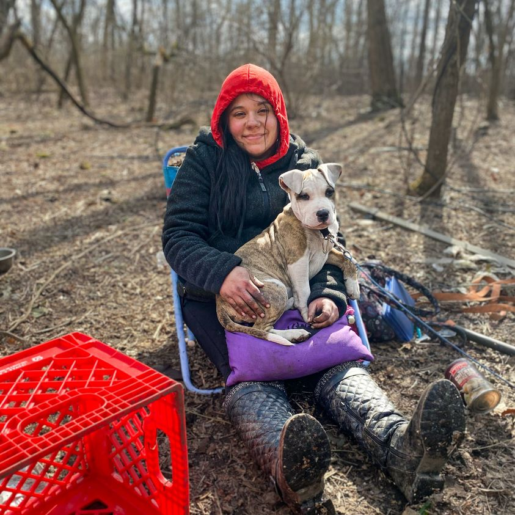

Timeline photos
This is my friend Aubrey, with her dog Harley.
She is pregnant, due in May, and lives in hiding in the woods hoping that the police and society don't find her and take all her belongings.
Some of us are learning acceptance of others. Some of us aren't. All of us need to be better at it.
For example, some of us are learning to accept non-binary gender. Spring Garden Waldorf School is particularly good at this. Some of us are trying everything in their power to oppress, condemn and sow hate for these people.
Black people, addicted people, homeless people, poor people, elderly people, mentally ill people, physically disabled people. ALL THESE PEOPLE BRING VALUE AND LIGHT TO THE WORLD. They are here for a reason. We all must practice compassion, forgiveness, love and acceptance. This is commanded by every meaningful spiritual guide in human history.
"To each their own."
That means: “We should allow each person to have their own opinion.” Or, "I try not to judge people who like different things from me - each to their own."
Humans have a VERY hard time with this. Conservative people can't seem to do it much at all, unless they or their family member happens to be different.
Aubrey is taking prenatal vitamins, she's going to the doctor and she plans to give the baby to her aunt.
She stays in the woods because she has severe social anxiety and finds it difficult to be around people. She is comfortable in the woods.
To each their own.
We are living through a battle between good and evil in much of the world. Good = love and acceptance. Evil = hate and bigotry.
Akron City Council is failing to get people on the police oversight board which was demanded by the people with 62% of the vote. It's a battle between good and evil. Evil is winning right now.
You need 7 votes to pass anything in city council. This oversight board thing needs 9 votes.
We must work to get 7 people on city council that are on the side of Good. Money and Power are fighting to keep Evil in charge. They are winning. Evil is winning.
PLEASE VOTE FOR ME, SAGE LEWIS, ON MAY 2, 2023 FOR WARD 8 AKRON CITY COUNCIL.
You know I fight for diversity, equity and inclusion. That is the side of goodness. That is the side of God. That is the side of Jesus and Ghandi and The Buddha. Those are the forces I fight for.
For all that is good in the world, PLEASE GET ME ON CITY COUNCIL.
#sageforakron8